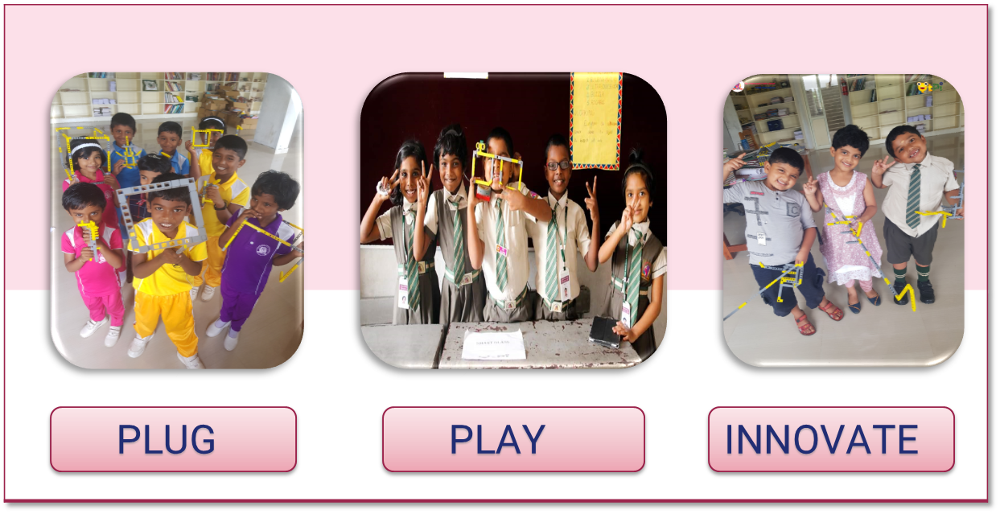
QtPi was established in 2016 and since then it has collaborated with 40+ schools, providing training in Robotics and STEAM. QtPi has achieved significant results across the schools it is collaborating with by providing not just theoretical knowledge but also by providing practical and hands-on experience with the kit provided by it. In 2018 QtPi collaborated with The Packianath Public School.
- Vision : "Our vision is to make children think innovatively and come up with various solutions to the day-to-day problems using technology and Robotics, Inherit the knowledge and apply it in various fields and come up with distinct and innovative ideas to improve the quality of life and for the betterment of society in a sustainable way".
- Mission: "To introduce emerging technologies in Robotics and make students come up with their own ideas and projects based on their learnings, promote e-learning pedagogy and lead the teachers and students towards a better teaching learning process."
- Moto: "Our motto is "Take on the world!!" As we always encourage our students to dream big, we wish to instil the quality of aiming high in our children's minds."
To Know about [QtPi Robotics] (https://www.qtpi.in/)
Principal: Dr.L.Xavier Eugien
I feel immensely pleased in welcoming you on behalf of the dynamic, competent and prestigious team of TPPS, a school that is creating an impression for its educational excellence through Active Learning.
We believe in catering and aesthetic ambience that would be required to fulfill the quench of global recognition , and thus the efficiency of The Packianath Public School (TPPS) has been sculpted upon three vital factors : Parents , Students and the school management. Our parents have been highly instrumental in our school's growth. The trust they have vested in our standards clearly indicate their positivity, support and a high-level of responsibility in taking the school process in the right perspective through their constructive feedback, involvement and encouragement. My heartfelt thanks to them all for their faith in us which we are committed to see efficaciously achieved.
Being a global citizen is the need of the hour, we nurture our students to be empathetic and skillful in knowledge. Academically our children are showing remarkable progress for the past three years. Our children have explored in all competitions and brought laurels to TPPS.
The management , under the guidance of our correspondent Mr.P.Sundarnath, is highly supportive to TPPS in progressing towards excellence. It is the collective vision of the TPPS management to foster global citizens.
We, TPPians look forward to prosperous learning days ahead.
Prayers and wishes to all TPPians
In the annual robotics exhibition which was held in november 2019, our young reporter Efen reported on various projects performed by the students in the Robotics Exhibition. All the students from grade 2 to 9 participated and 34 Innovative projects were displayed by the students.
Students put more effort into this event and succeeded, which was highly appreciated by management, teachers and parents.
- St.Judes Polytechnic College conducted SCIENCE EXPO FLARE 2018 (Interschool competition). The main objectives of this Science EXPO is promoting interest in Science and Technology among the younger generation and also encouraging scientific and technological creativity among students and inculcating a sense of pride in their talent.
- More than 30 schools participated in that event and more than 50 projects were displayed by the students. Our brilliant students Efen.R.S and Zeeshan Saleem from Grade 9 got 1st prize and bagged 10,000 rupees cash prize for SMART CAN project in that event.
- PUTHIYA THALAIMURAI Channel conducted VEETUKU ORU VIGNANI (Interschool competition). More than 45 schools participated in that event and more than 60 projects were showcased by the students. Our students Efen.R.S and Zeeshan Saleem from Grade 9 got 3rd prize and awarded certificates for the SMART CANE project in that event.
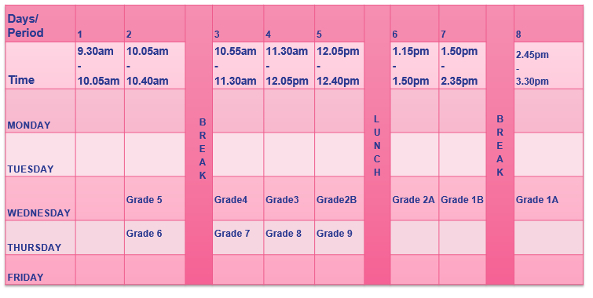
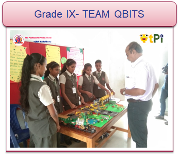
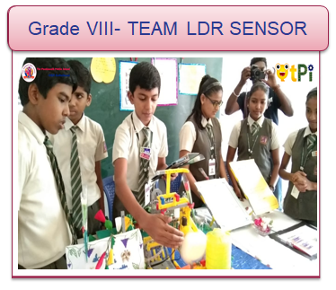

QtPi robotics Team has endeavour tremendous effort On ROBOTICS EXHIBITION in The Packianath Public School
- The aim of this exhibition is to provide exploratory experiences, encouraging creative thinking and promoting psychomotor skills among school students through self designed models or simple apparatus and also encouraging problem solving approach and developing appropriate technologies, especially for rural areas and integrating and applying scientific ideas in daily life situations.
- School management, parents and other honorary guests were impressed and also delighted to see the project delivered by their students.
- Students from various schools also attended the Robotics Fest and they were inspired by the innovative ideas of the students.
- The students and parents also gave us very strong and supportive reviews.
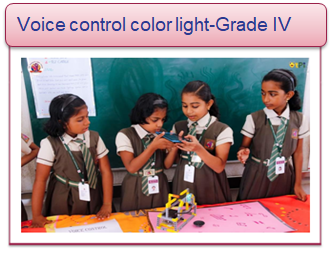 | 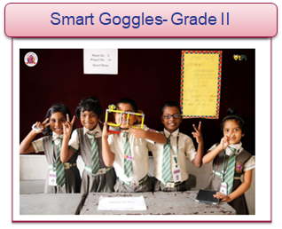 |
| 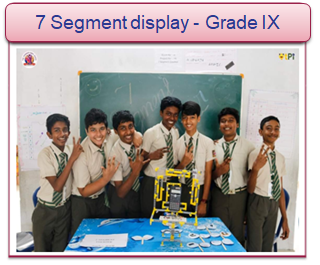 |
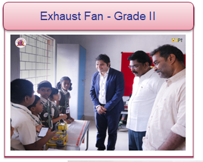 | 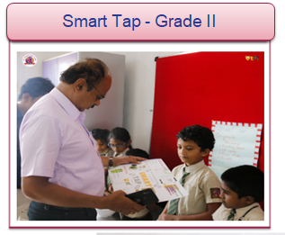 |
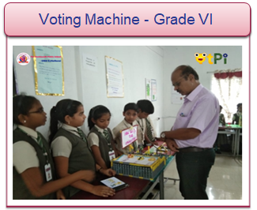 |
|
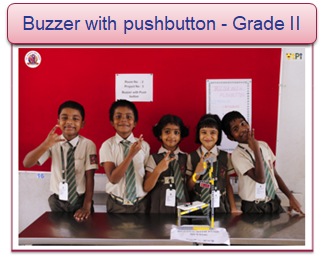 | 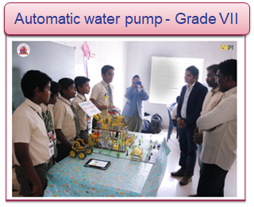 |


- Robotics exhibition was conducted in March 2019. From Grade 1 to 9 students participated in this event. 30 projects were exhibited by the students.
- The main objectives of this Robotics exhibition are: promoting interest in Robotics and Technology among the younger generation. encouraging scientific and technological creativity among students and inculcating a sense of pride in their talent and also popularising Robotics technology among masses and creating an awareness regarding its impact on socio-economic and sustainable development of the country.
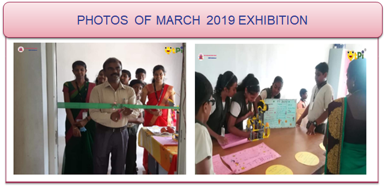
- Inter School robot competition was held in the Packianath school where students came from different schools and participated in that event and also won different prizes based on their project accordingly. 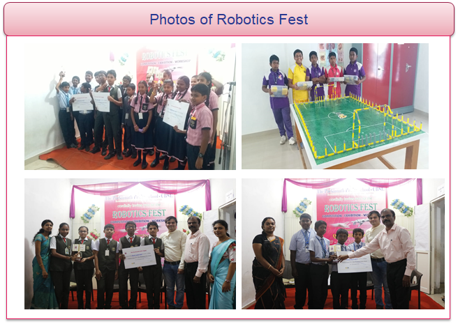
- Students' Automatic Terrace Garden project was an achievement of this academic year 2019-2020.
- The students who were active on the Automatic Terrace Garden project were
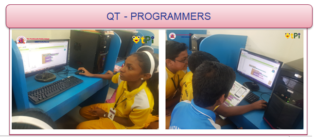
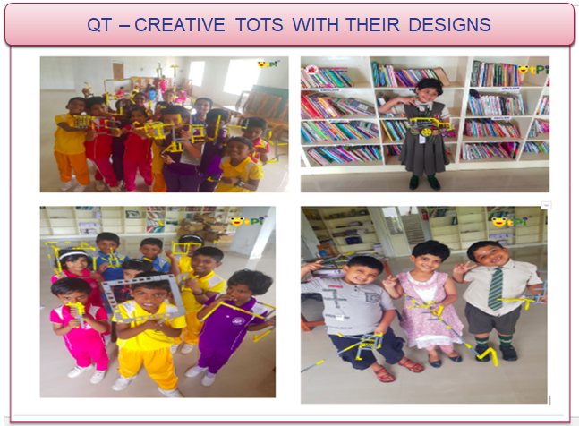
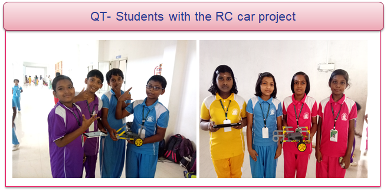
|